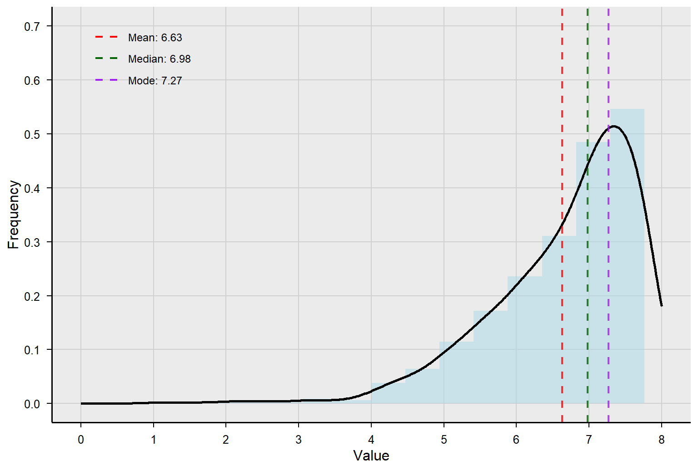
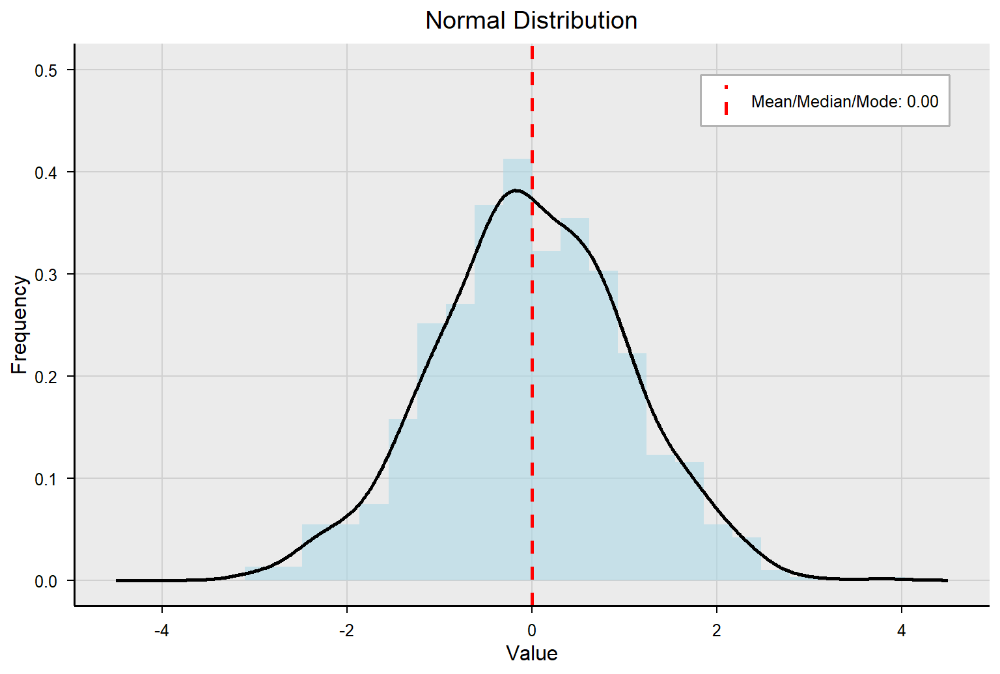
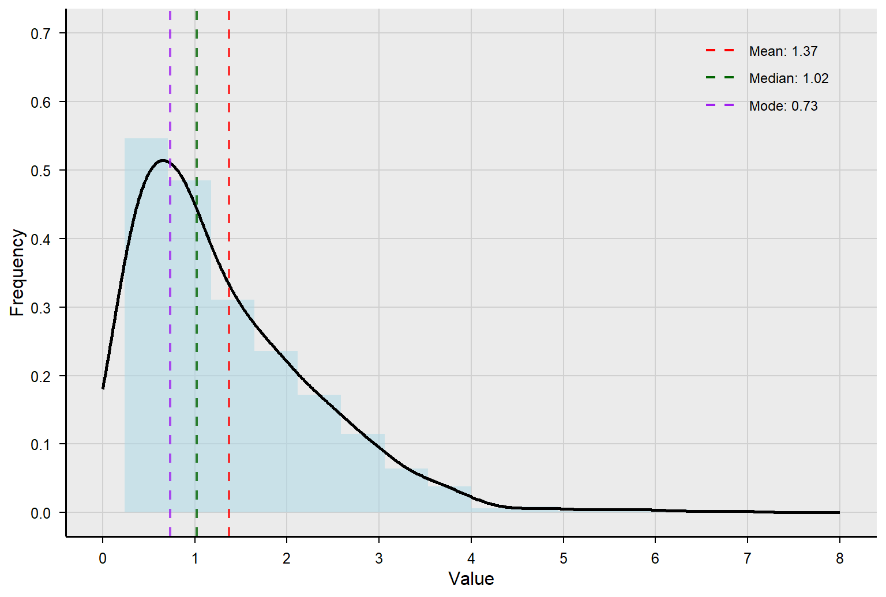

2 Chapter 2
Understanding the Center: Measures of Central Tendency
Learning Objectives
By the end of this chapter, you will be able to:
Define and distinguish among the three main measures of central tendency—mean, median, and mode—and describe situations in which each is most appropriate to use.
Accurately calculate the mean, median, and mode for a given dataset and interpret the results in context.
Describe the concept of skewness and its relationship to measures of central tendency.
In this chapter and the next two, we will discuss three ways of summarizing data. First, we look at how to generate a typical score – one value that can tell us something important about the data. In the next chapter, we will talk about variability, which refers to how spread out the data are. In other words, how well does that typical score represent the entire dataset? In chapter three, we will learn how to visually represent data. For now, we are going to focus on different ways to summarize data with a single value, which is known as the central tendency of the data.
2.1 What is Central Tendency?
Central tendency refers to the statistical measure that identifies the single value or point that best represents a dataset’s center, or typical, value. The most common measures of central tendency are the mean (average), median (middle value), and mode (most frequent value). These measures are used to provide a reasonably accurate description, or summary, of a group (think of a whole class, grade level, school, etc.). How do you know when to use the mean, median, or mode to describe a dataset? Let’s walk through an example.
A teacher gave a quiz to 8 students. Which measure of central tendency would be the most appropriate for summarizing the following scores?
\[ 13, 14, 10, 18, 11, 10, 16, 15. \]
Let’s use the three different measures of central tendency introduced above to summarize the scores and then decide which one provides the best description of the data. The first step is to reorder the scores from smallest to largest:
\[ 10, 10, 11, 13, 14, 15, 16, 18 \]
The mode is simply the most frequently occurring number in a dataset. The most frequently occurring number in this example is 10 as it appears twice, and other numbers only appear once.
The median is the center point in a set of numbers listed in numerical order. It is also the 50th percentile. Sometimes the median is referred to in terms of depth (i.e., the value halfway into the ordered score distribution). The median provides a measure that is less influenced by extreme values compared to the mean.
To calculate the median by hand, you first put your numbers in ascending or descending order, then check to see which of the following two rules apply:
Rule One. If you have an odd number of values, the median is the center number (e.g., 3 is the median for the numbers 1, 1, 3, 4, 9).
Rule Two. If you have an even number of numbers, the median is the average of the two innermost numbers (e.g., 2.5 is the median for the numbers 1, 2, 3, 7).
We can always define the median for N ordered raw scores with this formula: \(\frac{(N + 1)}{2}\) We have an even number of scores (rule 2) for our score data, so the median is the \(\frac{9 + 1}{2} = 4.5\) th ordered value.
The fourth value is 13. The fifth value is 14.
(13 + 14)/2 = 13.5
The median of our dataset is 13.5
The mean is the most commonly reported measure of central tendency in educational statistics. It is the arithmetic average of a dataset. More specifically, a sample mean, often denoted as \(\bar{X}\) can be defined as \(\bar{X} = \frac{\sum_{i=1}^{n} x_i}{n}\) where n represents the number of cases and \(x_i\) represents the ith value of variable x. In other words, \(\sum_{i=1}^{n} x_i\) means the sum of first to nth values of x. The sample mean is said to estimate \(\mu\) which is the population mean. For our score data, the mean is: \[ \bar{X} = \frac{10 + 10 + 11 + 13 + 14 + 15 + 16 + 18}{8} = \frac{107}{8} = 13.4 \]
The mean provides a central value that represents the overall distribution, but it can be heavily influenced by outliers or extreme values.
There are five key characteristics of the mean that are typically important when dealing with statistics in educational research:
Adding a new score or removing an existing score will change the mean, unless the value is equal to the mean. For example, adding a score of 1 to our dataset would change the mean to 12.
Changing an existing score will change the mean. For example, changing the first 10 in our dataset to 6 would change the mean to 12.9.
Adding, subtracting, multiplying, or dividing each score by a constant will change the mean by that constant. For example, if we added 100 to each score in our sample, the new mean would be 113.4.
The sum of the differences of scores from their mean is equal to 0. The table below illustrates this for our example. Note that the exact mean of 13.375 is used to avoid rounding error.
Sum of the Difference of Scores from the Mean
\(x_i\) \(x_i - \bar{X}\) \(10\) \(10 - 13.375 = -3.375\) \(10\) \(10 - 13.375 = -3.375\) \(11\) \(11 - 13.375 = -2.375\) \(13\) \(13 - 13.375 = -0.375\) \(14\) \(14 - 13.375 = 0.625\) \(15\) \(15 - 13.375 = 1.625\) \(16\) \(16 - 13.375 = 2.625\) \(18\) \(18 - 13.375 = 4.625\) \(\sum x_i = 107\) \(\sum (x_i - \bar{X}) = 0\) The sum of squared distances of scores from the mean is minimal, meaning no other value would lead to a lower sum of squared distances. Using squared distances will always produce a positive number. The larger the final product, the further scores deviate from the mean. The smaller the final product, the less scores deviate from the mean.
Sum of Squared Difference of Scores from the Mean
\(x_i\) \((x_i - \bar{X})^2\) \(10\) \((10 - 13.4)^2 = 11.56\) \(10\) \((10 - 13.4)^2 = 11.56\) \(11\) \((11 - 13.4)^2 = 5.76\) \(13\) \((13 - 13.4)^2 = 0.16\) \(14\) \((14 - 13.4)^2 = 0.36\) \(15\) \((15 - 13.4)^2 = 2.56\) \(16\) \((16 - 13.4)^2 = 6.76\) \(18\) \((18 - 13.4)^2 = 21.16\) \(\sum x_i = 107\) \(\sum (x_i - \bar{X})^2 = 59.88\)
Often, we only collect data from a subgroup of cases (a sample) from the entire collection of cases (population). The mean of a subsample of the data, \(\bar{X}\), or the sample mean, is said to estimate the population mean. The formula for a population mean is: \(\mu_x = \frac{\sum x_i}{N}\) The difference between this and the formula for a sample mean as seen above is “n” and “N”. The “N” represents the entire collection of cases that belong to your target population (e.g., all undergraduate students at a university) while “n” represents the sample size you obtained from the population (e.g., a random sample of 20 undergraduate students at the university). The difference between \(\bar{X}\) and \(\mu_x\) is typically not zero and considered to be sampling error.
We have three possible measures of central tendency for our data:
\[ \text{Mode} = 10, \text{Median} = 13.5, \text{Mean} = 13.4 \]
Which measure of central tendency do you think is the most appropriate to summarize how the students performed on the quiz? Why?
2.2 Advantages and Disadvantages of the Mode, Median and Mean
| Mode | Median | Mean | |
|---|---|---|---|
| Advantages | Represents the most frequently occurring number Applicable to nominal data Not affected by outliers |
Not affected by outliers Does not assume the scale is interval |
Can be manipulated algebraically (i.e., inferential analyses are possible) Uses all data to compute Allows inference about population characteristics More stable with large data |
| Disadvantages | Does not represent the entire collection of data | Difficult to apply inferential analysis to the median | Influenced by outliers Requires interval properties of the data |
The word outlier comes up a few times in the prior table, and it means a score that is much higher than the next highest score, or much lower than the next lowest score in your dataset. For example, imagine that instead of our original dataset, the scores looked like this:
\[ 10, 10, 11, 13, 14, 15, 16, 50 \]
In this case, the mode and median stay the same, but the mean changes to 17.4. With the first dataset, either the median or the mean would have been an appropriate measure of central tendency. Why? We would probably use the mean due to the advantages listed in the table above, but clearly the results were very similar. However, this second dataset has an outlier – one student who managed to score a 50. That single score has a major influence on the mean, so much in this case that the mean is higher than the second highest quiz score. You can imagine the outlier pulling the dataset up (or to the right), which makes the mean a less useful measure to summarize our dataset. That pulling is referred to as skewness, or lack of symmetry in the dataset. In the second example, we would use the median to describe the dataset.
2.3 Skewness and Measures of Central Tendency
We will learn a lot more in the next few chapters about distribution and the normal curve. For now, just know that if you plot all the numeric data points from a dataset and drew a curved line to connect them, it would look like one of the examples below. The curve in the middle is normal, which has many important properties. For now, we care about the extent to which the curve is skewed, or pulled to one side or the other. A negatively skewed curve will be pulled to the left, meaning the longer tail of the curve is on the left side. A positively skewed curve will be pulled to the right, meaning the longer tail of the curve is on the right side. The dataset above (10, 10, 11, 13, 14, 15, 16, 50) would be positively skewed because the outlier of 50 would pull the curve to the right.
(fig 2.1) (fig 2.2) (fig 2.3)
Note that when a variable is perfectly normally distributed, the mean, median, and mode are the same number. When the distribution is skewed to the left (i.e., negatively skewed), the mean shifts to the left the most, the median shifts to the left the second most, and the mode is the least affected by the presence of skew in the data. Therefore, when the data are negatively skewed, mean < median < mode.
When the variable is skewed to the right (i.e., positively skewed), the mean is shifted to the right the most, the median is shifted to the right the second most, and the mode is the least affected. Therefore, when the data are positively skewed, mean > median > mode. Again, this is what happened with our second dataset example (10, 10, 11, 13, 14, 15, 16, 50).
If you go to the end of the curve, to where it is pulled out the most, you will see that the order goes mean, median, and mode as you “walk up the curve” for negatively and positively skewed curves.
You can use the following two rules to provide some information about skewness, even when you cannot see a line graph on the data (i.e., all you need is the mean and the median):
Rule One: If the mean is less than the median, the data are skewed to the left.
Rule Two: If the mean is greater than the median, the data are skewed to the right.
2.4 Modal Distributions
Any distribution in which one or more numbers occur most often can be referred to as a modal distribution. We typically describe these distributions in one of four ways. Unimodal distributions have a single mode, or single score that occurs most often, and take the shape of a curve. The normal distribution, or bell curve, is a good example. Bimodal distributions have two modes, and the mean and median are typically located between the humps. Multimodal distributions have more than two modes.

Nonmodal or uniform distributions have no mode because every value is the same. As an example, 12 people take a test with scores ranging from 1 to 4. Three people each earn scores of 1, 2, 3, and 4. There is no mode, but the mean score is 2.5 and the mode is 2.5 - either would be an appropriate description of central tendency.

2.5 Conclusion
This chapter has provided a comprehensive overview of measures of central tendency, emphasizing the significance of the mean, median, and mode in summarizing data. Understanding these measures is essential for accurately interpreting datasets and making informed decisions in educational research and statistical analysis. The chapter highlighted the impact of skewness on central tendency and the importance of selecting the most appropriate measure based on data distribution. By mastering these concepts, readers can develop a strong foundation in statistical reasoning, enabling them to analyze and communicate data effectively. Moving forward, the next chapter will explore variability, providing further insight into how data spreads around these central measures.
2.5.1 Key Takeaways for Educational Researchers from Chapter 2
The mean, median, and mode are the three main measures of central tendency used to summarize a dataset. Mode represents the most frequently occurring value in a dataset; useful for nominal data and not affected by outliers. Median is the middle value in a dataset when ordered and less influenced by outliers than the mean. Mean is the arithmetic average computed all data in the variable, but sensitive to outliers.
Adding, removing or altering value in the dataset will directly impact the mean, but not necessarily the median or mode.
Choosing an appropriate measure of central tendency depends on the shape of score distribution. As a general rule, use the mean for symmetric data, the median for skewed data, and the mode for nominal or categorical data.
Understand the context of data and analyze the interested variables in the data set to decide which measure of central tendency best summarize the variables of interest.
2.6 Key Definitions from Chapter 2
Bimodal distributions are a distribution of scores where two scores occur most frequently.
Central tendency refers to the statistical measure that identifies the single value or point that best represents a dataset’s center, or typical, value.
Mean is the arithmetic average of a dataset. The sum of a set of scores in a distribution, divided by the total number of scores.
Median is the center point in a set of numbers listed in numerical order.
Mode is simply the most frequently occurring number in a dataset.
Multimodal distributions have more than two modes.
Negatively skewed data have a mean that is less than the median. When graphed, the left tail is longer than the right tail.
Nonmodal, or uniform, distributions have no mode because every value is the same.
An outlier is a score that is much higher than the next highest score, or much lower than the next lowest score in your dataset.
Positively skewed data have a mean that is greater than the median. When graphed, the right tail is longer than the left tail.
Skewness means the extent to which a curve is pulled to one side or another.
Unimodal distributions have a single mode, or single score that occurs most often.
2.7 Check Your Understanding
A researcher is investigating if any relationship exists between the hours a student sleeps at night and their math performance across a school district with more than 1,000 students. However, they can only survey 50 students. What notation below would be used to indicate the number of students surveyed?
- N = 50
- n = 50
The ______ is the value or values in a dataset that appear most frequently.
- Mean
- Median
- Mode
An educational researcher records the following sample of scores: 1, 2, 4, 4, 4, 5, 5, 7, 8, 10. Calculate the sample mean, median, and mode.
- Mean __________
- Median ________
- Mode ________
An educational researcher obtains the following sample scores: 1, 3, 3, 4, 6, 100. Using what method of central tendency to describe these sample scores might be problematic?
- Mean
- Median
- Mode
What direction of skewness is created by the following data? 1, 1, 2, 2, 10
- Positive skewness
- Negative skewness
- No skewness
Chapter 2: Central Tendency in R
This section demonstrates how to calculate and interpret the mean, median, and mode in R using data from the Programme for International Student Assessment (PISA). Additionally, we will explore skewness on the distribution of math achievement scores. All examples below use R code that can be adapted for your own datasets.
To illustrate the calculations, let’s extract plausible value 1 math achievement (PV1MATH) from the PISA U.S. dataset.